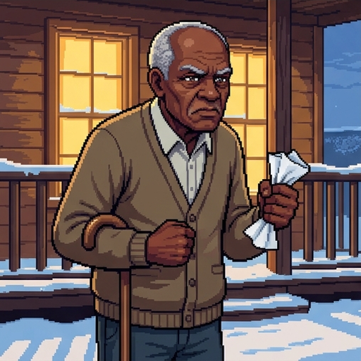
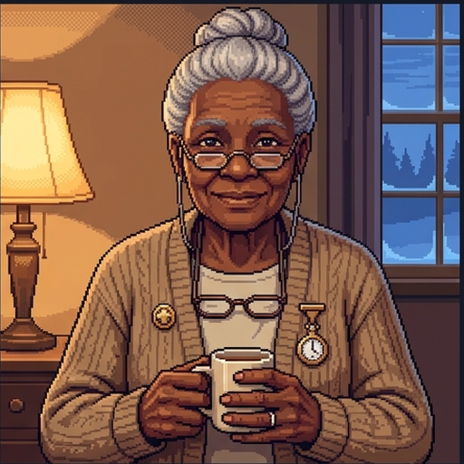
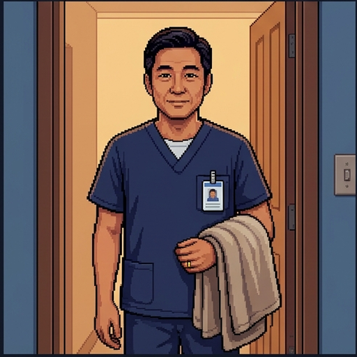
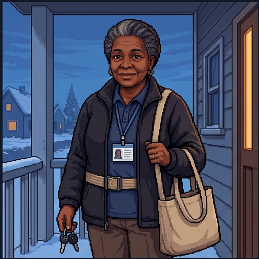
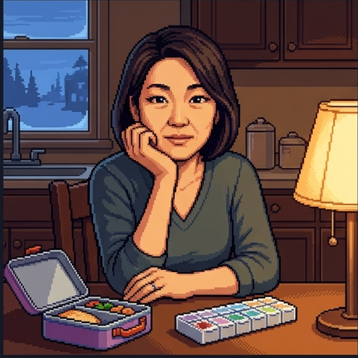
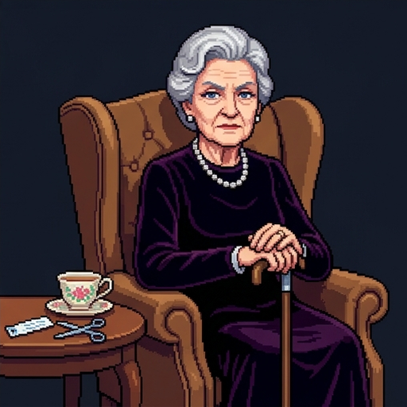
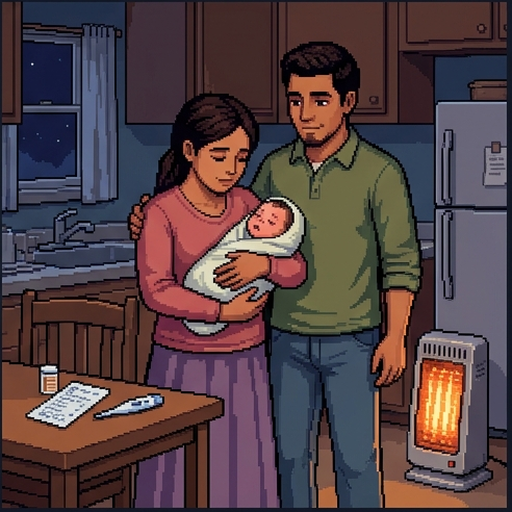

The March Practice
Orchard Falls has one family doctor, one small hospital, and a January that will not end. Dr. Jo March has six patients to see today and one thing to teach you.
Use → (or Next) to advance and to reveal points one at a time. F = fullscreen.
"I Am Not a Warm Person"
"I want to be clear about that before we start," Dr. March says, pulling off a snowy scarf. "Ask anyone in town."
- She is blunt, fast, and allergic to paperwork. She writes fiction at night and sleeps too little.
- Her patients would tell you she is the best doctor they have ever had.
- Today's question: how can both of those things be true?
- The answer is a virtue called care. By the end you will know why it is not the same as warmth.
Before Rounds
Five gut-checks, with no right answers. Say where you stand now. We will come back to them at the end of the day.
Caring is a personality trait. Some people have it and some don't.
A clinician who follows every guideline correctly has done the job, whether or not the patient felt cared for.
It is possible to care too much, and that is a real professional failing, not just a strength taken too far.
Care is mostly about feelings. Competence is a separate matter.
Whether clinicians can care for patients well depends more on how their workplace is run than on their own character.

"I Was Processed"
Mr. Laurence, 82, went into the hospital with fluid on his lungs. Amy, a first-year resident, sent him home three days later.
- Consent obtained. Medications reconciled. Instructions printed. Follow-up booked. Every box checked.
- Amy did it in eleven minutes, and the attending signed off without a note.
- That evening, Mr. Laurence tells Jo over the fence: "I was processed."
- "Read the chart," Jo says. "You will not find a single thing wrong with it."
What Was Missing?
Run the four principles from your last lesson over Amy's discharge.
- Autonomy: respected. He understood and agreed. Beneficence: delivered. The plan was right.
- Nonmaleficence: no harm done. Justice: nothing unfair to anyone.
- And the patient walked out feeling like a chart. No principle names that failure.
- Here is the claim this lesson defends. Principles tell you what is owed. Care is the character that notices, wants to act, and shapes how the act is done.
Two Questions
"Ethics asks two questions," Jo says. "The principles answer one. Character answers the other."
Public, checkable action-guides. You specify them, balance them, and argue about them out loud.
Amy's discharge passes every one of them.
Stable traits of character. They show in the manner of an act, and in what you notice before acting.
Beauchamp and Childress: principles and virtues are partners, not rivals.
Name the Gap
Respect for autonomy, since he was never properly consented.
The character with which a correct act was carried out.
Beneficence, because the discharge plan itself was mistaken.
Justice, because other patients were treated better than he was.
Virtue Is a Disposition
"I don't feel warm," Jo says. "I do care. Those are different things, and the difference has a name."
- A virtue is a stable trait of character that people rightly value. That is Beauchamp and Childress's definition.
- A moral virtue also involves motivation. You do right because you want to, not only because you must.
- Aristotle's word is hexis: a settled state, not a mood. You can be caring on a bad day.
- A virtue is not a feeling, not a personality type, and not a rule. It is who you reliably are.

"Nobody Is Born a Nurse"
Jo's mother spent forty years as a nurse. The whole town calls her Marmee.
- Aristotle: "We become just by doing just acts" (NE II.1). Character is built the way a skill is built.
- Jo's residency: an attending made her sit down at every bedside for a year. She hated it.
- By the end of the year, sitting down was simply what she did. The habit had become her.
- "Nobody is born a nurse," Marmee says. "You are made one, by doing it until it is you."
The Mean
Aristotle's second idea is that every virtue sits between two ways of getting it wrong.
- Courage sits between cowardice (too little) and rashness (too much). The mean is the virtue.
- The mean is not the arithmetic middle. It shifts with the person and the situation (NE II.6).
- Finding it takes practical wisdom. Beauchamp and Childress call the clinical version discernment.
- Care has a too-little and a too-much. Keep that in mind. We will come back to both.
The Mean of Care
Pick a character and a facet of care. Green means near the mean; amber or magenta means trouble. Jo's whole town is on here, including Jo.

Why Bother?
Meg's husband John is a hospice nurse, and the calmest person in town. "Why would you want a virtue at all?" Jo asks. "Aristotle's answer is about you, not the patient."
- Aristotle's word for a good human life is eudaimonia: flourishing, living well over a whole life (NE I.7).
- Virtue is not a tax on the good life. It is part of what makes a life good.
- So a life of good care is a good life for the one giving it, not just for the one receiving it.
- Which is why care that destroys the carer has gone wrong. Hold onto that too.
Test the Definition
A virtue is a stable disposition, not a single good act.
Virtues are acquired by practice, the way skills are.
A moral virtue involves wanting to do right, not just doing it.
A virtue is a strong feeling of sympathy for someone.
You are born with your virtues, or you are not.
A virtue is a rule that tells you what to do in each case.

Care, Defined
"Care" is the word on every hospital's wall. Here is what it means as a virtue.
- Beauchamp and Childress: care is caring for, emotional commitment to, and willingness to act on behalf of a person you have a real relationship with.
- In a clinic, that relationship is the clinical one. Care is the virtue the other clinical virtues serve.
- Fisher and Tronto define it widest: everything we do to maintain, continue, and repair our world so we can live in it well.
- Notice what neither definition says. Neither says feel warm. Both say commit and act.
Four Parts of Care
Beth is 24, has had a heart condition since childhood, and knows the ward better than some residents.
- Attentiveness: noticing the need. Beth has stopped asking questions. Somebody has to see that.
- Responsibility: taking the need on as yours, not paging it to someone else.
- Competence: meeting it well. A volunteer who holds Beth's hand and mixes up her meds is not caring for her.
- Responsiveness: checking how it landed for her, not for you. The four parts are Joan Tronto's.
The Instruments of Care
Laurie is an ICU nurse and the reason Beth trusts the unit. Beauchamp and Childress name five virtues that make care work.
- Compassion, the feeling. Discernment, the judgment about what this patient needs right now.
- Trustworthiness: Beth knows Laurie will do what he said. Integrity: he is the same nurse when nobody is watching.
- Conscientiousness: the follow-through. The order placed, the call made, the family told.
- Professions specify character for a role. The nurses' code opens with compassion and respect for every person's dignity.
Care Is Not Warmth
"People confuse these constantly," Jo says. "One of them I have. Guess which."
Some people have it and some do not. It can be faked for an hour, and it can be missing in an excellent clinician.
A warm resident who forgets the follow-up call was pleasant, not caring.
Learned, reliable, and shown in what you do when the patient is difficult and the shift is long. It includes competence.
Jo, blunt and tired, sitting down at the eleventh bedside of the day. That is care.
In Their Words
A virtue is a stable disposition of character.
Care involves emotional commitment to a person
and a willingness to act on their behalf.
Care without competence is sentimentality.
Which One Is Care?
The friend who feels terrible for Beth and tells everyone how much it hurts.
The resident who orders every right test for Beth and never learns her name.
The aide who notices Beth has gone quiet, asks why, adjusts, and checks back later.
The relative who insists on a treatment Beth has already refused.
Too Little, Too Much
Care has a deficiency and an excess. Both fail the patient. One of them also destroys the carer.
The patient becomes a case. Every box checked, nobody home. Sometimes it is a new resident. Often it is a veteran who withdrew to survive.
Amy's eleven-minute discharge.
No boundaries, no limit, no off switch. The carer takes on what is not theirs and keeps going past the point of use.
Laurie covering nine extra shifts and texting families at midnight.

Care That Stops Listening
Meg is the eldest sister. She teaches part-time, has two kids, and is Aunt March's unpaid caregiver.
- Last week Meg quietly canceled Aunt March's bridge night and booked a nursing-home tour. "For her own good."
- Aunt March found out. Meg meant it kindly, and it was still care tipped over into paternalism.
- Care that stops listening has left the mean. It does things to a person instead of for her.
- From your last lesson: this is where beneficence and respect for autonomy meet. Care has to hold both.
The Soup
Jo lives next door to Mr. Laurence. On Sundays she makes soup, and there is always too much.
- Is bringing him a bowl care, or a dual relationship that could cloud her judgment as his doctor?
- In a town of four thousand, dual roles cannot be avoided. Jo's patients are her neighbors, her plumber, her kid's teacher.
- No rule settles it. Discernment does: what does he need, what could go wrong, and which hat is she wearing?
- What matters is knowing which hat, and being honest with him about it.
Decision Point: Sunday
Not graded. Reasonable clinicians divide on this one.
Bring it. Care does not stop at the clinic door.
Don't. Dual relationships compromise clinical judgment.
Bring it as a neighbor, and say so.
When a Whole Unit Goes Cold
"Burnout is not a character flaw," Jo says. "When a whole unit goes cold, I do not look at the nurses. I look at the staffing."
- Burnout, compassion fatigue, and moral injury are what care looks like when the institution stops supporting it.
- Aristotle said whether people can be virtuous depends on the community they live in (Politics I.2). A unit is a small polis.
- Tronto: institutions have to be built to care, or the people inside them cannot keep doing it.
- Sustaining care is part of the virtue. The responsibility for making that possible sits mostly above the bedside.
Nine Extra Shifts
This is care at its highest, since he put the patients first.
It only breaks a duty-hours rule and says nothing about character.
Care has no upper limit, so there is nothing here to criticize.
This is care past the mean, and it undermines his ability to keep caring.

Aunt March Says No
Aunt March is 88, wealthy, and has cut off her own hospital wristband with nail scissors. She is staying in her chair.
- The principle is clear. She has capacity, she understands the risk, and she refuses. Respect the refusal.
- Care adds what the principle leaves out. Respecting a refusal is not the same as walking away.
- Jo stays, plans for what Aunt March does want, and comes back Thursday. Nobody is abandoned.
- Her choice is made inside a web: Meg, Hannah, Jo. Care attends to the web, not just the signature.
"Sorry to Be a Bother"
Beth apologizes every time a nurse comes in. The principles say benefit her and do not harm her. Care says what those words mean for Beth.
- Beneficence needs specifying. Beth wants to be home for her niece's recital more than she wants two extra days of monitoring.
- Care is how you find that out. You have to ask, and you have to be the kind of person she will answer.
- Nonmaleficence has a blind spot. No checklist names the harm of a patient who has stopped asking questions.
- Attentiveness catches it. That is not a fifth principle. It is the character that makes the four work.

Who Does the Caring
The Hummels are a farmworker family with a feverish baby and no insurance. Hannah, their home health aide, is paid by the hour and drives between clients on her own time.
- Meg's unpaid hours. Hannah's wages. The Hummels' pharmacy receipt on the kitchen table.
- Care work is mostly done by women, and mostly underpaid. A virtue of care with no justice of care is sentiment.
- Care ethics also raises a worry about partiality. Is it fair to care more for your own patient?
- Beauchamp and Childress's answer: yes. Justice governs how care is distributed. Care governs the bedside.
Where the Idea Came From
Care as a virtue did not come from Aristotle. It was named by feminist philosophers, and it is found everywhere.
- Carol Gilligan (1982) and Nel Noddings (1984) named it. Gilligan heard a moral voice the tradition had scored as immature.
- Feminist philosophy defended something the tradition had dismissed as women's work. This lesson owes it that debt.
- And care is nobody's invention. Mencius's child at the well, Buddhist karuṇā, ubuntu, caritas, raḥma, the Hippocratic oath, Nightingale.
- Not everyone agrees care is a virtue. Virginia Held calls it a rival ethic, built on relations rather than character. This lesson takes the other view.
Partners, Not Rivals
Care ethics has two standing complaints about principle-based ethics. Beauchamp and Childress accept both, and answer with a partnership.
Principles can be too impartial and too detached, and they say too little about emotion. A cold discharge passes every one.
Care puts the person back in the chart.
Principles give care public accountability, a guard against favoritism and paternalism, and a way to argue when two carers disagree.
Meg's kindness needed a principle to tell her she had crossed a line.
After the Refusal
Overriding her, because caring means doing what is best for her.
Documenting the refusal carefully and closing the chart.
Persuading her until she agrees to be admitted.
Continued presence, follow-up, and a plan for what she does want.
Complete the Map
Beauchamp and Childress hold that principles and virtues are complementary.
Care ethics charges principle-based theory with overvaluing impartiality
and neglecting emotion.
Partiality toward your own patient is legitimate;
justice governs how care is distributed.
Back to the Belief Probe
Here is where you stood before rounds. Re-rate each one. Staying put is fine; the question is whether you can now say why.
"This Is a Practice"
"This is a practice," Jo says, winding the scarf back on. "That is not an accident of language."
- A virtue is a disposition you build by doing it. Care is the one the clinic runs on.
- Care has parts (notice, take on, do it well, check) and instruments (the five focal virtues).
- It has a mean. Too little is a chart; too much is a burned-out nurse. The institution owns much of where you land.
- It completes the principles instead of replacing them. Feminist philosophy named it, and every tradition knows it.
Visit every slide, answer every question, and submit both belief probes.